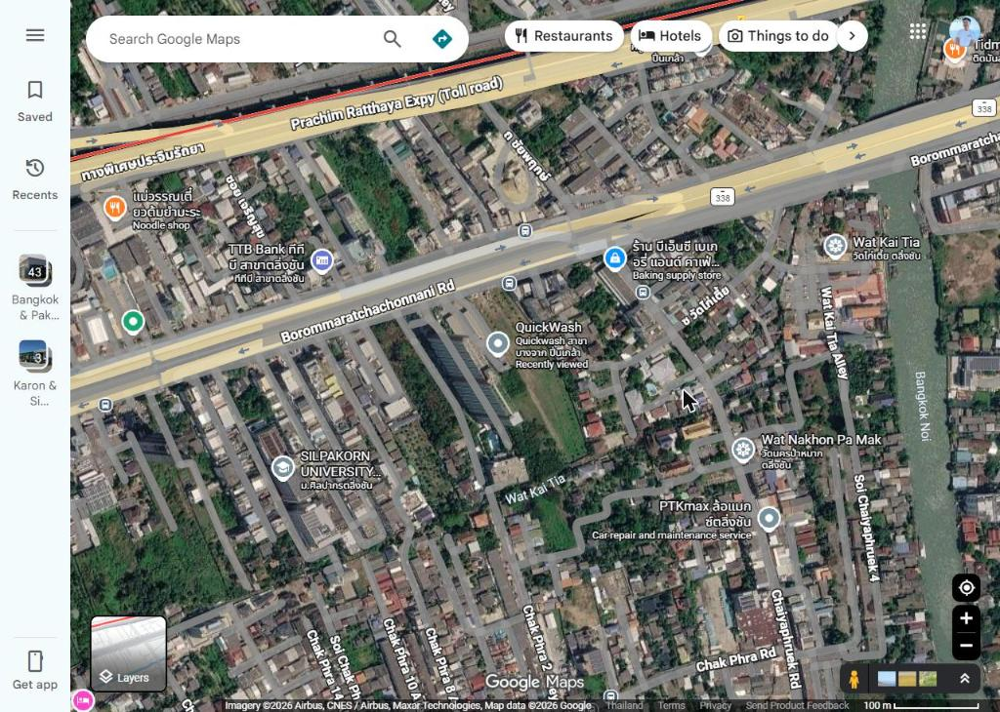
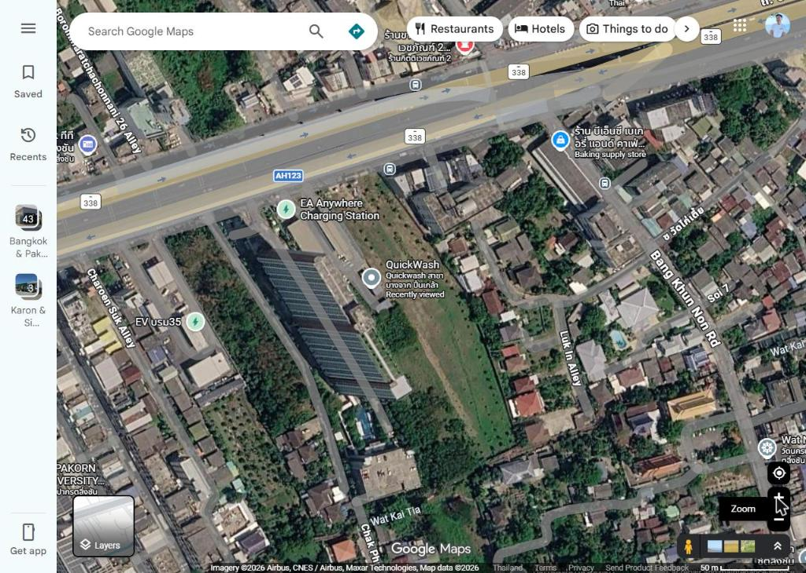
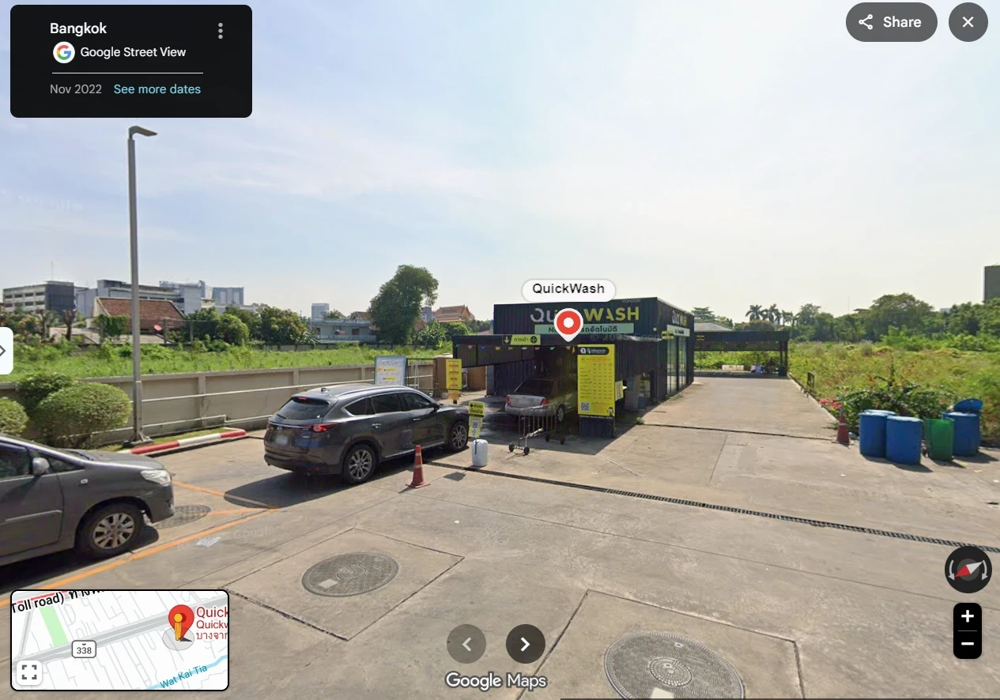

QuickWash Field Observation
สำรวจเพื่อศึกษา operational model ของคาร์แคร์เครื่องอัตโนมัติในไทย ใช้เปรียบเทียบกับ T-REX Car Wash ในแง่ throughput, process flow, staffing, equipment และข้อควรระวังด้าน construction — เป็น short sample observation ไม่ใช่ capacity study เชิงสถิติ
ที่ตั้ง



- ที่อยู่
- 24, 28 ถนนบรมราชชนนี ตลิ่งชัน กรุงเทพฯ 10170 · เปิดใน Google Maps ↗
- Rating
- 4.4 ★ (131 reviews)
- เวลาเปิด
- ปิด 20:00
- เว็บไซต์
- quickwashthailand.com
- โทร
- 092 281 2771
Process Flow
Vehicle #5 · การแบ่งเวลา 36 นาที
- 16:16 — Vehicle #4 ออกจากเครื่อง เข้า finishing phase · Vehicle #5 เริ่ม machine cycle ได้ทันที (ต้องรอ #4 เคลียร์เครื่องก่อน)
- 16:19 — Vehicle #4 ออกจากร้านจริง · finishing phase ของ #4 ใช้เวลา 3 นาที
- 16:23 — Vehicle #5 จบ automatic machine wash + air-blow · machine cycle = 7 นาที ยืนยันจาก timestamp คู่นี้
ข้อสังเกต: ช่วง 15 นาทีท้ายของ #5 (16:23–16:38) ไม่ได้แยก task ย่อย — เป็น elapsed time ไม่ใช่ labour time · เทียบกับ #4 ที่ finishing ใช้ 3 นาที อาจหมายความว่าช่วงนี้รวมเวลารอ staff หรือ touch-up หนักกว่าเฉลี่ย
Vehicle Log
| # | มาถึง | รถ | สี | ประเภท | อายุประมาณ | สถานะ queue | ออก |
|---|---|---|---|---|---|---|---|
| 1 | 15:18 | Toyota Vios | ดำ | Sedan | 10+ ปี | ไม่รอ | — |
| 2 | 15:27 | Mitsubishi Xpander | ขาว | MPV | — | ไม่รอ | — |
| 3 | 15:44 | Nissan Kicks | ขาว | SUV | รุ่นเก่า | ไม่รอ | — |
| 4 | 15:55 | Mazda CX-5 | ขาว | SUV | ~5 ปี | ไม่รอ | 16:19 |
| 5 | 16:02 | Ford EcoSport | แดง | Mini SUV | 10+ ปี | รอ · คุย 3 นาที | 16:38 |
| 6 | 16:32 | Toyota Vios | ขาว | Sedan | 5–10 ปี | ไม่รอ | — |
| 7 | 16:34 | Toyota Corolla Cross | เทาเข้ม | Crossover SUV | 3–5 ปี | queue #1 | — |
Arrivals Timeline
รถ #1–#4 เข้าห่างกัน 9–17 นาที ไม่มี wait · ช่วง #5–#7 ถี่ขึ้น (รถใหม่เข้ามาก่อน #5 เสร็จ) ทำให้เกิด queue · 5.25 รถ/ชม. เป็น descriptive arrival rate ไม่ใช่ throughput จริง
Observations
T-REX Design Recommendation
ยกขอบล่างของผนัง metal sheet ขึ้น 10–15 ซม. จากพื้น
ที่ QuickWash สังเกตเห็น metal sheet ติดถึงพื้น มีโอกาสสะสมความชื้นและเกิดการกัดกร่อน (corrosion) T-REX ควรยกขอบล่างขึ้น 10–15 ซม. จากพื้น + ใช้ base detail ที่ทนน้ำ เพื่อลดการสัมผัสน้ำโดยตรง — เป็นข้อเสนอจาก visual observation ไม่ได้ยืนยันสาเหตุ corrosion ที่สังเกตเห็น
Open Questions · Follow-up Fieldwork
- Machine specs: ถ่าย nameplate ISTOBAL เพื่อระบุ model, configuration (rollover/gantry/tunnel), จำนวนแปรง, ระบบ drying
- Machine cycle breakdown: แยก start, wash phases, rinse, wax, drying start/end, machine release
- Bay utilization: รถแต่ละคันเข้า–ออก machine bay ตอนไหน · finishing area รองรับได้พร้อมกันกี่คัน
- Labour vs elapsed: แยก pre-wash, รอ machine, machine cycle, post-wash finishing, payment/exit ออกจากกัน
- Staffing: confirm จำนวน/role จาก shift จริง · ทำ multitask กันแค่ไหน
- Water system: tank type, usable volume, filtration, recycling, replenishment, consumption/คัน
- Queue pattern: queue ที่เห็นเป็น occasional หรือ typical · เก็บข้อมูลหลายช่วงเวลา/วัน
- Customer loyalty: สมาชิก/package/repeat workflow · อย่า infer จาก "ไม่คุย" อย่างเดียว
- Throughput: นับ completed vehicles ต่อชั่วโมง ต่อเนื่อง 1 วันเต็ม รวม peak + off-peak
Observed vs Inferred vs Unknown
| ประเภท | ตัวอย่าง |
|---|---|
| Observed | Vehicle #5 เข้า machine 16:16 · จบ air-blow 16:23 · machine cycle = 7 นาที · Vehicle #4 ออกเครื่อง 16:16 → ออกร้าน 16:19 · arrival/departure ที่บันทึกในตาราง |
| Estimated | พนักงาน 3–4 คน · อายุรถแต่ละคัน · model/ประเภทของรถ #3 (รุ่นเก่า, ไม่มี badge ชัด) |
| Hypothesis | 6 คันเป็นลูกค้าเดิม (เพราะไม่คุย service) · สาเหตุ corrosion ของ metal sheet ที่ติดถึงพื้น · ปกติร้านอาจ busy กว่านี้ 2–4 เท่า |
| Unknown | ISTOBAL model/serial · ปริมาณน้ำที่ใช้จริงต่อคัน · departure ของ #1–#3, #6–#7 · task breakdown ใน 15 นาทีท้ายของ #5 · usable volume ของถังน้ำ 2 × 3,000L · ระบบ recycle น้ำ |
หมายเหตุ: ก่อนนำข้อมูลใด ๆ ไปใช้ — ตรวจสอบระดับใน column ซ้ายก่อน · Observed คือสิ่งที่จับเวลา/เห็นในสนามจริง · Estimated / Hypothesis / Unknown ต้องอัปเกรดจาก follow-up fieldwork